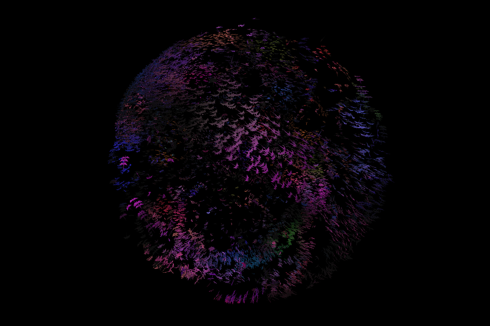
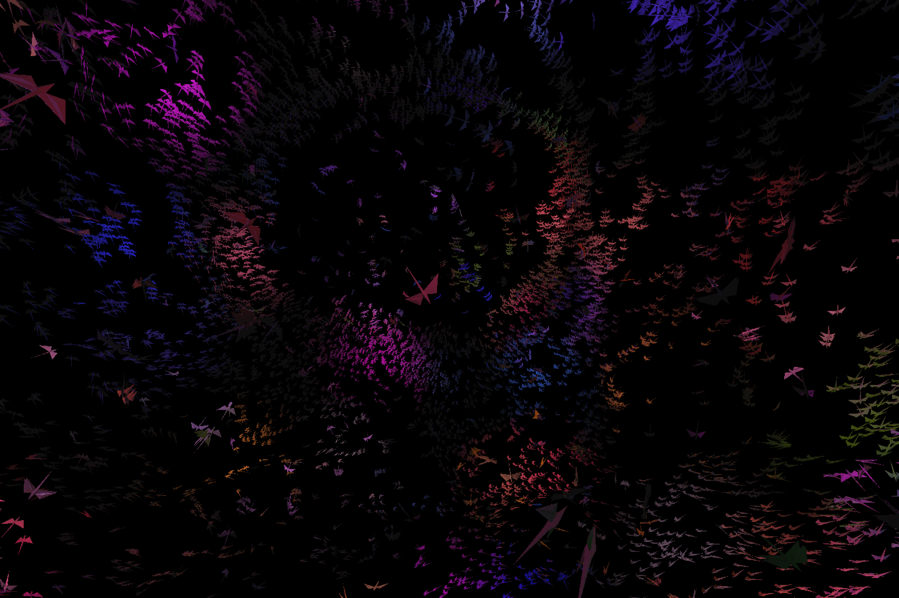
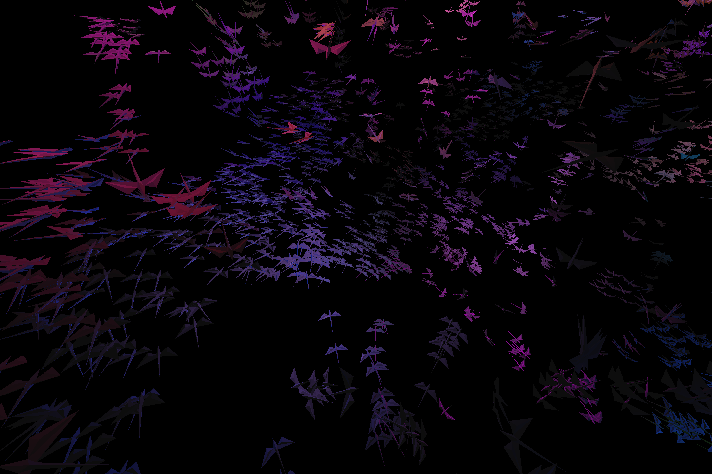

boids_vk
About
boids_vk is a real-time simulation of 10,000 dynamically flocking autonomous agents. The simulation code is written in C++ on the CPU and utilizes data-oriented design patterns and a thread pool for efficient parallel processing. The simulation is rendered in Vulkan using instanced rendering. Put simply, this thing runs fast. I can maintain simulation time of 20-25ms when run on my laptop.
This is a smaller scope project that helped me learn the ins and outs of the Vulkan API along with practicing data-oriented design patterns. I also just love boids and the greater topic of autonomous agents as described by Craig Reynolds. Staring at this simulation while it's running is absolutely mesmerizing.
Skills Used
- C++
- Slang (shader language)
- Vulkan
- Data-oriented design
- Parallelization
Gallery


